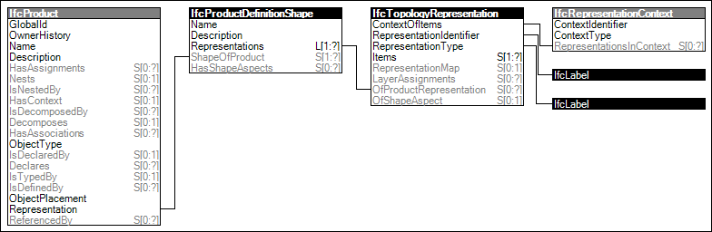

Link to this page
Link to this pageThe topology of products may be represented in multiple ways for different purposes. Each representation has a well-known string identifier and a particular representation context. There may be multiple representation contexts to describe a topology for various uses.
Figure 88 illustrates an instance diagram.
 |
Figure 88 — Product Topology Representation |